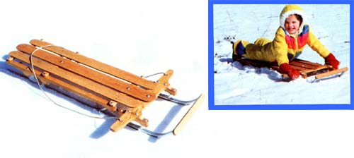
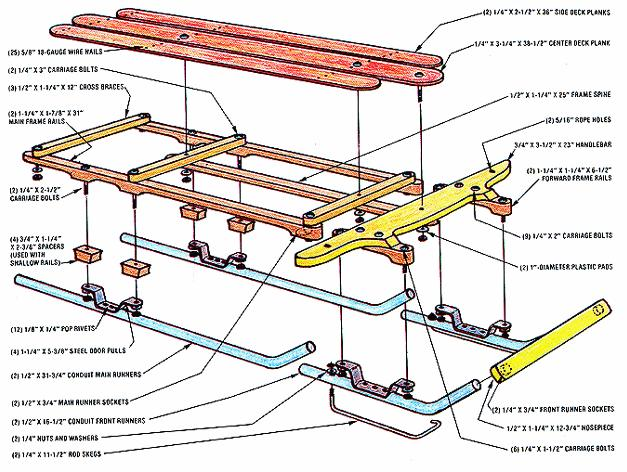
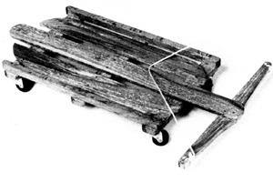
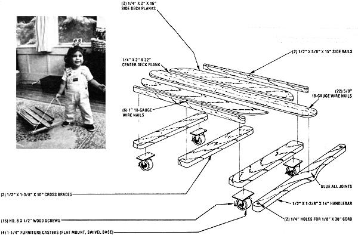

If the idea of a sturdy homebuilt sled strikes your fancy (and it well might, considering the prices of today's brand name models), you may want to take a close look at the snow scooter that MOTHER's woodshop "elves" pieced together for the holiday season. Believe it or not, this attractive white-oak-and-steel slider was built largely from odds and ends . . . but it works just as well as the "benchmark" models that are the envy of every kid on the hill. In fact, its maneuverability may even be superior because of the unique isolated steering design!
Before your skepticism gets the better of you, we'll have to let you in on one of the secrets behind the cutter's high quality and low cost: Every bit of wood in this sled was salvaged-free-from a discarded oak freight pallet. Now it's true that the older hardwood shipping skids are a bit difficult to find these days, but some are still around . . . at warehouse loading docks, manufacturing and printing plants, behind "chain" retail stores, or even in the local dump. Seek, and (with luck) ye shall find.
At any rate, if you can locate a hardwood pallet in good shape for a reasonable cost (or for free), half the battle is won. To prepare it for recycling, carefully remove its fluted nailseither by unscrewing them with a pair of ViseGrips or by hammering the decking planks so they separate from the three larger stringers, thus exposing the fasteners-and then free the boards of any staples, strapping, or what have you that might still be attached. (Try not to split the wood as you work with it, or you'll end up searching for a second pallet to make up for breakage.)
CUT AND TRIM
With the lumber laid out, you're ready to determine which pieces to use for the various components. The organic portion of the sled is made up of several parts:
[1] the lengthwise frame, consisting of two 1-1/4" X 1-1/4" X 61/2" pieces, two 1-1/4" X 1-7/8" X 31" sections, and one 1/2" X 1-1/4" X 25" central spine,
[2] the cross braces . . . three 1/2" X 11/4" X 12" ribs,
[3] the decking, made of one 1/4" X 3-1/4" X 38-1/2" plank and two 1/4" X 2-1/2" X 36" tongues,
[4] the handlebar, simply a 3/4" X 3-1/2" X 23" board (to be formed to the desired shape), and
[5] the nosepiece, a 1/2" X 1-1/4" X 12-3/4" strip.
Since not all pallets are constructed in the same way, we can't tell you exactly which part of a skid to use for each sled component, but common sense should be your guide: If a hunk of salvaged wood looks as if it might yield the handlebar, the three cross braces, and the nosepiece, then go for it!
If you'll notice, every piece of wood in the cariole has formed or rounded edges, which can be duplicated with a coping saw.
We should point out, though, that we've specified 1/4" material-stock that's not found in most pallets-for the sled's decking. The strips can be made by planing down the thicker boards (which is what we did), or-to save a bit of work-the 1/2" to 3/4" planks can be used as is. By the same token, the longer frame sections-which are a full 1-7/8" highcan be either cut from a 2"-wide board (a relatively easy process) or "blocked" by gluing 3/4" X 1-1/4" X 2-3/8" spacers to these rails where they require width and then contouring them (a tech nique that we quickly learned is not particularly easy).
Once you've decided on the stock to use, outline on the raw billet, in pencil, the shapes of the parts you need, and then cut them . . . first to length, next to width, and then-if you wish-to thickness. Obviously, a table saw can be a boon to this project, but a circular saw-or even just a pair of sharp handsaws (one rip, and one crosscut)would do in a pinch. When cutting, keep a sharp lookout for any buried nails . . . and try not to position a large nail hole or knot in any structural member.
Finally, use a jig or coping saw to round of the ends of the components and-on the appropriate pieces-to contour the surfaces.
RODS AND RUNNERS
When you've cut your wood to size and shaped it as best you can to duplicate what you see in the illustration and photos, you can start working on the sled's metal parts.
The runners are, like the frame, a two part proposition. The main section (at the rear) consists simply of a pair of 1/2" electrical metallic tubes (E.M.T.), each 31-3/4" in length and curved to a 45 ° angle on what will be the forward end. You can make these curves with a conduit bender or by carefully bending them around a post. About 2" of straight stub should protrude ahead of the arc when everything's done. The front, or steerable, section is made of the same material, but each runner is 16-1/2" long with 2-1/2" of straight stub .. . and is equipped on its bottom edge with an 11-1/2" skeg made from 1/4" reinforcing rod.
To install each of these metal guides, you'll have to cut threads into one end with a 1/420 die, bend a small hook in the other end, form the rod to the curve of the runner, and put a 90 ° crook in the threaded end so it'll pass trough the rear of the tubes and accept a 1/4" nut. Once this is done, you can drill 9/32" holes into the conduit at the points where the hooks and the threaded stubs will penetrate (keeping in mind that the former elements have to pierce only one wall of the runners' tubing). Then twist, slip, and fasten the skegs in place.
The next task is to mount the runners to their respective wooden frame rails. We did this using two pairs of galvanized wrought steel door pulls having a center-to-center hole measure of 5-3/8" and a projection o 1-1/4". For the main (rear) skids, it's easier to first drill a 3/4" hole (about 1/2" deep) into the forward end of each main side rail at a 45 ° angle-leaving enough of the rail's tip to accept a fastening bolt that you'll install later and then slip the front of each runner into place. Now, position the door handle mounts toward the rear, so that the pull holes are centered over the stanchions the frame rails (see the diagram) . . . mark the wood for drilling . . . and lock the handles to the conduit with a few pop rivets (o braze the parts together, making
sure that you do so in a well-ventilated area).
The front runners are similarly fastened only in this case they mount to the handles just forward of the midpoint between the straight end of the tubes and their bows . . . and the handles, in turn, are simply bolted to the 6-1/2"-long forward frame rails. The runners' front tips are housed in 1/4" deep, 3/4" sockets drilled into the nosepiece on an I 1 " center: The bumper board can be locked to the conduit either with a good epoxy glue or with short 1/4" roundhead bolts threaded into nuts brazed within the tips of the tubes.
From here on in, it's just a matter of bolting and nailing the wooden parts together. The handlebar should be mounted square to the front runner assembly (the tubes lf must be precisely parallel) with 1/4" X 2" carriage bolts, and 5/16" rope holes should be drilled and countersunk in the center of each grip.
The three cross braces can now be bolted atop the main side rails . . . one at each end, and the third 18 inches behind the front one. Next, the three decking strips can be tacked in place with 5/8" 18-gauge wire nails. The widest tongue goes in the center, with 6" of it extending forward of the front cross brace, and the other two are placed on either side of the main plank (allow 5/8 inch between slats), with 4" protruding.
At this point, you'll want to fasten the steering carriage to the main body. To do this, lay both sections upside down on a flat surface and position the handlebar beneath the forward end of the center deck plank so its midpoint is 1-1/2 inches behind that strip's rounded front edge, and so that the fore and aft runners are in line. Then drill a 1/4" hole at that midpoint through the two pieces of wood . . . and another through the 25 "-long central spine bar (the only piece of loose wood remaining) about 1 inch from one of its ends. Place the spine against the underneath surfaces of the handlebar and the two foremost cross braces, and lock the handlebar, spine, and center decking plank together with a 1/4" X 2" carriage bolt. (This steering pivot pin will function much more smoothly if you cut 1 "-diameter circles from the sides of a plastic milk jug, bore their centers, and slip the pads between the handlebar and the wood above and below it.) Two more bolts-each placed between the remaining junctions of the spine, cross braces, and center plank-will complete your sled's assembly.
Of course, you'll no doubt want to protect the oak from the effects of snow with a coat or two of shellac or polyurethane . . . and you'll need to thread and tie your steering rope to the handles. But once that's done, you can hit the slopes with a vengeance . . . or simply enjoy a leisurely pull along a well packed (and sparsely traveled) country lane. And by the way, don't forget to bring along your runner wax!
There's nothing like bounding down a snowy slope on a good of runner sled to fill a kid's winter afternoon. Sometimes, however, while the children old enough to look after themselves are having a grand time, their younger siblings are "grounded" indoors, brooding over the big kids' new plaything with something akin to jealousy.
Well, it's easy enough to avoid that scenario: If you're building the skid sled anyway, you might as well go the extra mile and whip up this pint-sized replica while you're at it. It's made from salvaged wood as is the larger toy, but-instead of employing runners-it rolls on four furniture casters that allow a toddler to pull the sled along the floor or carpet . . . which can be big-time fun for someone who's just learning to get around!
To build it, follow the basic guidelines given for the snow sled. They boil down to [1] choosing the parts of the shipping pallet that are necessary to make the individual components called for in our illustration, [2] planing and cutting those pieces to match our given dimensions, and [3] shaping and sanding them to render a smooth, finished look. As is the case with this model's big brother, the use of power tools will make your woodworking chores a good deal easier . . . but the job can be done with handsaws, a bench plane, a coping saw, and a sanding block (if you don't mind using a bit of elbow grease).
Assembling the little carpet scooter ought to take only a short time (once you've made the pieces) . . . if you refer to the diagram. All of the wood joints should first be bonded with carpenter's glue, then as each one is made-secured with 5/8" 18gauge wire nails.
(The side rails will require a larger, 1 ", nail.) Put the frame together by laying the three cross braces down-parallel and about 5-1/4 inches apart-on a work surface and then attaching the two side rails to the boards' ends. Next, the three deck planks are fastened (positioned at 5/8" intervals, with the center one extending beyond the front cross brace by 4-3/4 inches), and the handlebar is attached.
Finally, screw the swivel-base casters in place beneath the sled's four corners, and tie the tow rope through the holes in the handlebar. A coat of varnish or polyurethane adds a finishing touch, and your house-bound skidder is ready to roll!
|
|
 |
 |
|
 |
 |
|